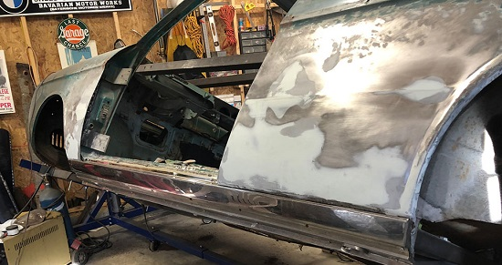
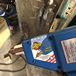
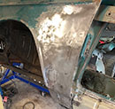
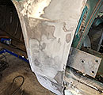
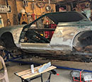
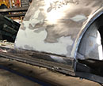

January 2018 - Filler & Glazing, Trim Re-Fit
New Year’s 2018 I feel a certain level of accomplishment with this 1966 BMW 2000c. In the past year, I have completely disassembled the car, mounted it on a rotisserie, replaced the driver’s side middle/outer rockers, repaired the A & B-pillar bases, and repaired the rust damage on the rear quarter and front fender.
The repair areas on the lower quarter panel look good. I do know the panels aren’t ready though. They may look smooth, but the only way to truly determine a perfectly smooth surface worthy of the paint process is to use a long sanding board perhaps with a misted guide coat of rattle can black paint.
Dent Pulling

There are some bothersome dents on both the rear quarter panel as well as the front fender. The front fender dent occurred when the driver’s door brake failed (or was removed) and someone let the door swing open beyond its intended range. Always easy to spot on older BMWs (including 2002s). It causes a long, vertical dent on the fender and dents the door skin. Just don’t do it! Morons.
I bought my friend Tom’s used dent puller/welder unit. Instead of drilling a hole and screwing in a pulling head for a dent-pulling hammer, you simply pull the trigger and fuse a copper pulling rod to the target area and pull. When done, simply grind off. No having to weld up drilled holes.
Strait Panels BEFORE Primer

Get the panels as strait and smooth as possible BEFORE primer. When I restored my BMW 2002 a few years back, I opted to go right to the epoxy sealing primer after visually inspecting the prepped bare panels. They "looked" perfect. This gave me a false sense of progress. The surface looked even better under the grey primer. I thought I was ready for paint. Alas, going to primer too soon just led to more work later. When I applied and block sanded the high build primer over the epoxy primer, I was revealing high and low points. I was stunned. Don't let your eyes fool you. Having to do major panel straightening at the high build phase is problematic because it is easy to sand back down to bare metal thus losing the protective quality of the epoxy primer. Then you need to go back and apply more epoxy primer. Sort of taking a step backwards.
Long Board and Filler

After some more body hammer and dolly work, I spray a mist of cheap acrylic rattle can black paint on my target areas. I then do 45 degree opposing sandings with a long board and 80 grit sandpaper. This gives me a rough idea of high and low areas. Body hammer and dolly work for high areas, and filler for low area. The filler I use is a “Metal-to-Metal” moisture impenetrable application. It has a type of metal compound in it, and it seals the metal the same way epoxy primer does. Don't use Bondo. It takes a few passes with the body filler.
Glazing

After some more guide coats and long board sanding, I apply a glazing (putty) which goes on smooth and finalizes a smooth transition for strait panels. You can denote the difference between the lighter colored glazing and darker colored filler. The most time consuming part for me at this point was restoring the distinct mid-panel lines that had been disrupted with the dents. This is very tricky work. Once the base and clear go on, these dinstinct signature body lines will really jump out as strait or shitty. You see it on a lot of mediocre restorations.
Fitting Stainless Trim

The decorative 3-piece stainless steel (chrome) trim fitment requires drilling roughly 20 holes in the new outer rocker for the sheet metal screws that secure the trim to the car. At this point, I also secure the reinforced jack point to the outer rocker with temporary fat screws. The position of the D-shaped jack point has to be exact due to the exact fit of the lower rocker trim cover. Once the jack point is situated, I do some final welding to secure the jack point to the outer rocker and remove the temporary screw.
{kind=link}